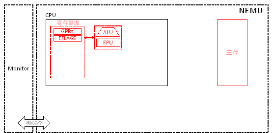
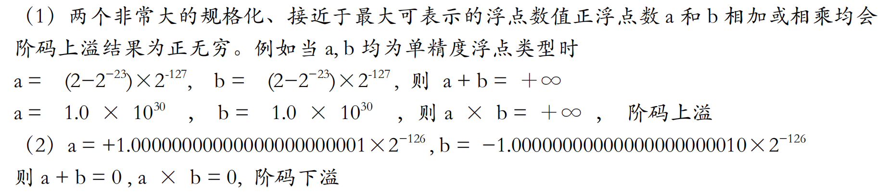
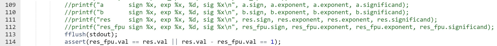

PA 1-3 浮点数的表示和运算——浮点运算的大门
NEMU是模拟的x86体系结构，浮点数的表示和运算参照IEEE 754标准的规定。在上一节所实践的整数表示方法中，小数点约定永远在最右侧，因此可以说是一种数的定点表示方法。也可以通过约定小数点在某一特定位置来表示带小数的数字。而本节的实验中，我们参照x86体系结构的现行标准，实现IEEE 754标准的浮点数表示和运算方法。于定点数表述方法不同，浮点数表示的一个数字，其小数点所在的位置是不定（浮动）的，因此称之为浮点数。

根据IEEE 754标准的规定，单精度（32位）浮点数由最高位1位符号位（sign），8位阶码部分（exponent）和23位尾数部分（fraction）构成，其具体的表示方法如下：
Single-precision Floating Point
31 30 23 22 0
+-+--------+-----------------------+
|s|exponent| fraction |
+-+--------+-----------------------+
s - sign
在单精度浮点数的表示中，8位阶码部分采用移码形式，其偏置常数为127；对于规格化数而言，23位的尾数部分实际上表示了24位的有效数字，其最高位缺省为1。尾数加上最高位可能存在的缺省的1（非规格化浮点数没有缺省的1）后构成的有效数字在框架代码中命名为significand以示和不带隐藏位的fraction的区别。在PA实验中，我们仅关注单精度浮点数的表示和实现。双精度（64位）浮点数的表示方法与单精度浮点数非常类似，只是阶码部分扩展为11位（偏置常数1023），尾数部分扩展为52位。
代码实现
FPU的模拟
-
实现
nemu/src/cpu/fpu.c中的各个浮点数运算函数； -
使用
make clean后使用make编译项目； -
使用
make test_pa-1命令执行NEMU并通过各个浮点数运算测试用例。
在NEMU中，浮点数的表示和运算由nemu/src/cpu/fpu.c中的各个浮点数运算函数实现。在nemu/src/cpu/fpu.c中，我们定义了如下几个浮点数运算函数。
我们的框架代码良好实现了大部分FPU的操作（包括对于浮点数特殊值如NAN的处理、浮点数加减乘除等运算），留下了几个Todo需要我们实现。事实上这已经大幅度降低了我们实现的难度。
首先，我们需要完善实现浮点数的规格化、非规格化、指数为0、指数为255等特殊情况的处理。基于我们理论课程的知识，相关代码补全工作不难理解，这里直接给出。
inline uint32_t internal_normalize(uint32_t sign, int32_t exp, uint64_t sig_grs)
{
// normalization
bool overflow = false; // true if the result is INFINITY or 0 during normalize
if ((sig_grs >> (23 + 3)) > 1 || exp < 0)
{
// normalize toward right
while ((((sig_grs >> (23 + 3)) > 1) && exp < 0xff) // condition 1
|| // or
(sig_grs > 0x04 && exp < 0) // condition 2
)
{
/* TODO: shift right, pay attention to sticky bit*/
sig_grs |= ((sig_grs & 0x1)<<1);
sig_grs >>= 1;
exp++;
}
if (exp >= 0xff)
{
/* TODO: assign the number to infinity */
exp = 0xFF;
sig_grs = 0;
overflow = true;
}
if (exp == 0)
{
// we have a denormal here, the exponent is 0, but means 2^-126,
// as a result, the significand should shift right once more
/* TODO: shift right, pay attention to sticky bit*/
sig_grs |= ((sig_grs & 0x1)<<1);
sig_grs >>= 1;
}
if (exp < 0)
{
/* TODO: assign the number to zero */
exp = 0;
sig_grs = 0;
overflow = true;
}
}
else if (((sig_grs >> (23 + 3)) == 0) && exp > 0)
{
// normalize toward left
while (((sig_grs >> (23 + 3)) == 0) && exp > 0)
{
/* TODO: shift left */
sig_grs <<= 1;
exp--;
}
if (exp >= 0xff)
{
/* TODO: assign the number to infinity */
exp = 0xFF;
sig_grs = 0;
overflow = true;
}
if (exp == 0)
{
// denormal
/* TODO: shift right, pay attention to sticky bit*/
sig_grs |= ((sig_grs & 0x1)<<1);
sig_grs >>= 1;
}
if (exp < 0)
{
/* TODO: assign the number to zero */
exp = 0;
sig_grs = 0;
overflow = true;
}
}
else if (exp == 0 && sig_grs >> (23 + 3) == 1)
{
//需要将exp++，保证阶码真值为-126
exp++;
}
if (!overflow)
{
/* TODO: round up and remove the GRS bits */
uint64_t temp_s = sig_grs & 0x1;
uint64_t temp_r = (sig_grs & 0x2) >> 1;
uint64_t temp_g = (sig_grs & 0x4) >> 2;
if (temp_g && (temp_r || temp_s || (((sig_grs >> 3)&0x1)==1))) sig_grs += 8;
sig_grs >>= 3;
if ((sig_grs >> (23)) > 1 || exp < 0){
while ((((sig_grs >> (23)) > 1) && exp < 0xff) // condition 1
|| // or
(sig_grs > 0x04 && exp < 0) // condition 2
)
{
/* TODO: shift right, pay attention to sticky bit*/
sig_grs |= ((sig_grs & 0x1)<<1);
sig_grs >>= 1;
exp++;
}
if (exp >= 0xff)
{
/* TODO: assign the number to infinity */
exp = 0xFF;
sig_grs = 0;
overflow = true;
}
if (exp == 0)
{
// we have a denormal here, the exponent is 0, but means 2^-126,
// as a result, the significand should shift right once more
/* TODO: shift right, pay attention to sticky bit*/
sig_grs |= ((sig_grs & 0x1)<<1);
sig_grs >>= 1;
}
if (exp < 0)
{
/* TODO: assign the number to zero */
exp = 0;
sig_grs = 0;
overflow = true;
}
}
}
FLOAT f;
f.sign = sign;
f.exponent = (uint32_t)(exp & 0xff);
f.fraction = sig_grs; // here only the lowest 23 bits are kept
return f.val;
}
此外，我们还需要实现internal_float_add函数，该函数用于实现浮点数的加法。该函数接受两个参数，均为32位无符号整数，分别表示两个浮点数。该函数返回值为32位无符号整数，表示两个浮点数相加的结果。其中，我们需要完善浮点数的对阶。
uint32_t internal_float_add(uint32_t b, uint32_t a)
{
// corner cases
int i = 0;
for (; i < sizeof(corner_add) / sizeof(CORNER_CASE_RULE); i++)
{
if (a == corner_add[i].a && b == corner_add[i].b)
return corner_add[i].res;
}
if (a == P_ZERO_F || a == N_ZERO_F)
{
return b;
}
if (b == P_ZERO_F || b == N_ZERO_F)
{
return a;
}
FLOAT f, fa, fb;
fa.val = a;
fb.val = b;
// infity, NaN
if (fa.exponent == 0xff)
{
return a;
}
if (fb.exponent == 0xff)
{
return b;
}
if (fa.exponent > fb.exponent)
{
fa.val = b;
fb.val = a;
}
uint32_t sig_a, sig_b, sig_res;
sig_a = fa.fraction;
if (fa.exponent != 0)
sig_a |= 0x800000; // the hidden 1
sig_b = fb.fraction;
if (fb.exponent != 0)
sig_b |= 0x800000; // the hidden 1
// alignment shift for fa
uint32_t shift = 0;
/* TODO: shift = ? */
shift = fb.exponent - fa.exponent;
if (fa.exponent == 0)
shift--;
if (fb.exponent == 0)
shift++;
assert(shift >= 0);
sig_a = (sig_a << 3); // guard, round, sticky
sig_b = (sig_b << 3);
uint32_t sticky = 0;
while (shift > 0)
{
sticky = sticky | (sig_a & 0x1);
sig_a = sig_a >> 1;
sig_a |= sticky;
shift--;
}
// fraction add
if (fa.sign)
{
sig_a *= -1;
}
if (fb.sign)
{
sig_b *= -1;
}
sig_res = sig_a + sig_b;
if (sign(sig_res))
{
f.sign = 1;
sig_res *= -1;
}
else
{
f.sign = 0;
}
uint32_t exp_res = fb.exponent;
return internal_normalize(f.sign, exp_res, sig_res);
}
在将框架代码中几个Todo完善后，我们在工程目录下make test_pa-1通过浮点数的测试样例，即代表本阶段代码模拟实现部分结束。
思考习题
PA1-3
为浮点数加法和乘法各找两个例子：1）对应输入是规格化或非规格化数，而输出产生了阶码上溢结果为正（负）无穷的情况；2）对应输入是规格化或非规格化数，而输出产生了阶码下溢结果为正（负）零的情况。是否都能找到？若找不到，说出理由。

框架导读
本讲中使用到的测试样例位于nemu/src/cpu/test/fpu_test.c，我们以浮点数除法为例。
void fpu_test_div()
{
float input[] = {
p_zero.fval, n_zero.fval, p_inf.fval, n_inf.fval, denorm_1.fval, denorm_2.fval, big_1.fval, big_2.fval,
p_nan.fval, n_nan.fval, denorm_3.fval, small_1.fval, small_2.fval,
10000000, 1.2, 1.1, 1, 0.9, 0.8, 0.7, 0.6, 0.5, 0.4, 0.3, 0.2, 0.1, -0.1, -0.2, -0.3, -0.4, -0.5, -0.6, -0.7, -0.8, -0.9, -1, -10000000};
FLOAT a, b, res, res_fpu;
int i, j;
//int count = 0;
for (i = 0; i < sizeof(input) / sizeof(float); i++)
{
for (j = 0; j < sizeof(input) / sizeof(float); j++)
{
//printf(" == %d ==\n", count++);
a.fval = input[i];
b.fval = input[j];
res.fval = a.fval / b.fval;
res_fpu.val = internal_float_div(b.val, a.val);
//printf("float div a = %f, b = %f, ua = %x, ub = %x, res = %x, res_fpu = %x, res = %f, res_fpu = %f\n", a.fval, b.fval, a.val, b.val, res.val, res_fpu.val, res.fval, res_fpu.fval);
//printf("a sign %x, exp %x, %d, sig %x\n", a.sign, a.exponent, a.exponent, a.significand);
//printf("b sign %x, exp %x, %d, sig %x\n", b.sign, b.exponent, b.exponent, b.significand);
//printf("res sign %x, exp %x, %d, sig %x\n", res.sign, res.exponent, res.exponent, res.significand);
//printf("res_fpu sign %x, exp %x, %d, sig %x\n", res_fpu.sign, res_fpu.exponent, res_fpu.exponent, res_fpu.significand);
fflush(stdout);
assert(res_fpu.val == res.val || res.val - res_fpu.val == 1);
}
}
srand(time(0));
for (i = 0; i < 1000000; i++)
{
a.val = rand();
b.val = rand();
if (a.exponent == 0xff || b.exponent == 0xff)
continue;
if (b.fval == 0)
continue;
res.fval = a.fval / b.fval;
res_fpu.val = internal_float_div(b.val, a.val);
fflush(stdout);
assert(res_fpu.val == res.val || res.val - res_fpu.val == 1);
}
printf("fpu_test_div() \e[0;32mpass\e[0m\n");
}
alu的测试样例更加清晰，我们以浮点数除法为例，a和b分别代表被除数和除数，res代表结果，res_fpu代表浮点数除法的结果。如果遇到结果不符合预期的情形，我们使用assert宏来断言；在此之前，我们可以删去对应的注释符号使用printf打印出a、b、res和res_fpu的值，方便我们调试。
但是，随着PA的发展，一些代码可能并没有跟上。位于 pa_nju/nemu/src/cpu/test/fpu_test.c的如下代码

删去注释符号后会遇到如下报错

一个可能符合想法的修改如下

这将有助于我们调试完成的代码。
PA-1-3阶段结束
PA-1结束，你需要第一次提交代码。请注意截止时间与实验报告要求，需要注意不要抄袭和使用内联汇编。